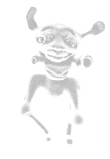

Rigoberto Gallardo
Grieta57
Galvanized steel, threaded rods, pipe clamps, audio speakers, AbletonLive, SpectralMorph Max4Live device, Arduino with ultrasonic sensors, found objects.
This sculptural sound installation explores cognitive and cultural practices on spaces, their evolution into places, and the beyond-human kinship relationships developed by humans through geographic and environmental association. Loosely based on the metaphor of the Borderlands consciousness coined by Gloria Anzaldúa, the work seeks to engage the conflictive nature of identity development for individuals with mixed racial and ethnic backgrounds, or who exist in tense geocultural conditions due to migration or forceful re-shaping of territory due to conflict. By engaging space visually, physically and auditorily, the work utilizes representational markers of places from the artist’s personal history and proposes conscious perception as a tool for agency in the fluid morphing of existing in clashing physical and mental environments.
instagram:@mvdoae
♡ ♡ back ♡ ♡